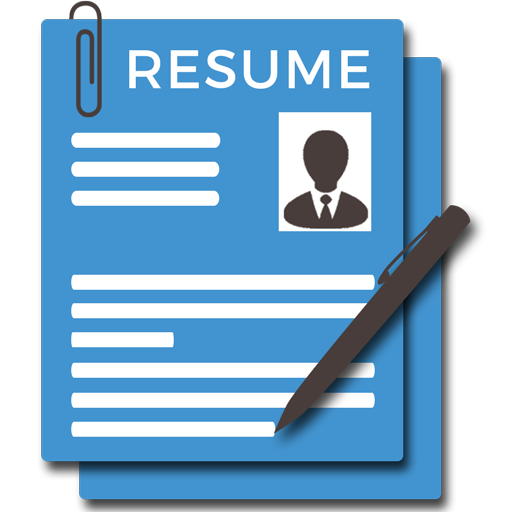

BUILD A PROFESSIONAL RESUME TODAY ITSELF
- A creative, professional layout can grab a recruiter's attention. Our resume layout optimizer makes sure all your content is aligned and organized so your resume looks like a work of art.
- Not only do you get to build your resume for free, you also get access to successful resume samples and cover letter examples that you can use for guidance.
- Let our free resume templates and cover letter templates do the work for you. Choose from a selection of recruiter-approved layout designs for different job types.
- It only takes a couple of seconds to start using our online resume builder. The resume creator is offered completely through our website, meaning there is no software to download.
